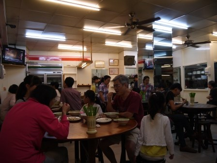
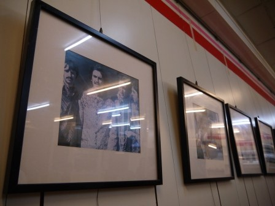
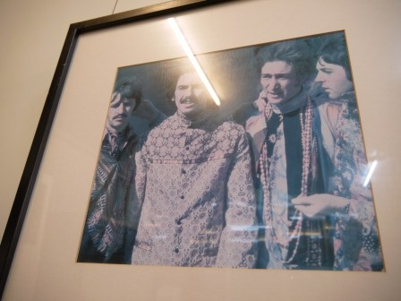
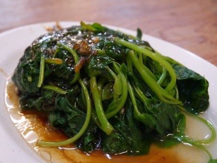
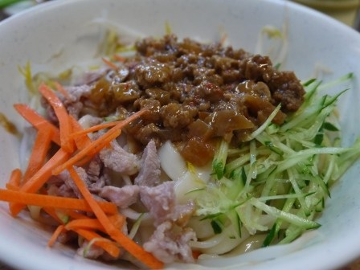
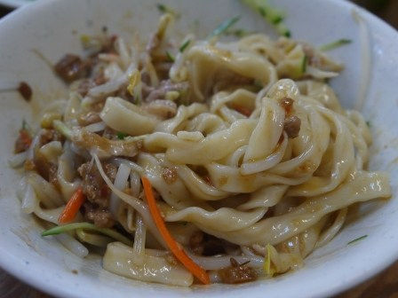
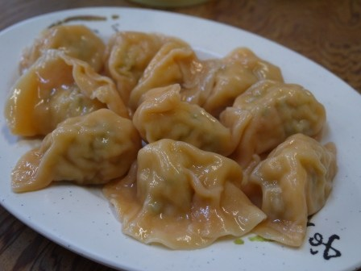
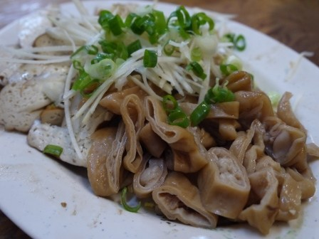

要去竹蓮寺拜拜的路上 經過了學府路一路上有不小的小吃店 學府路上有新竹高商新竹高中建華國中 所以在這裡也可以找到不少好吃的小餐廳 建華國中的對面這間老雲記 隨時經過裡面都好多人啊 這天找不到東西吃就決定來這裡吃了 進去之前連賣什麼得我都不知道 一進門四處看了一下 這裡就是到處都是的傳統麵食館阿 很多人是全家一起來吃 我想這裏的價位對於全家人來吃來講應該相當划算的
一進門的牆壁上 這一整排的照片讓我覺得相當有趣
這是Beetles 披頭四阿 在這相當傳統的小麵館裡面 牆上畫了這麼多的披頭四的照片 感覺相當的不搭阿 也許這是老闆年輕時候的最愛也不一定
先來個不會錯的燙青菜吧 地瓜葉真的是全民美食 最近太多有毒的東西了 吃吃天然的青菜比較不會有問題
炸醬麵 看起來好豐富阿
這個是寬麵 我最喜歡這樣的口感了 把所有的東西都拌勻了 醬料就平均的跟麵條混在一起了 這麵相當的Q 簡單的肉醬 小黃瓜與胡蘿蔔絲的加入 增加了整碗麵的顏色與口感 每一口吃起來都有香氣跟脆度 好吃
這裡的水餃也是很厲害的阿 看這個照片就知道全都是手工的 手工水餃一定比機器的好吃阿 畢竟那麵皮的口感完全不同 水餃一上桌 記的不要馬上吃啊 稍微讓麵皮涼一下讓整個濕氣稍微降下來 整個麵皮的Q度才會出來
這裡的小吃好吃嗎? 本來沒有點的因為怕吃不完 不過看到每一桌都點了 而且來這樣的麵食館沒有點小菜好像也挺怪 還好有點小菜阿 這裡的小菜都滷得好入味啊 所以不需要加醬油就覺得很夠味了 當然加點辣椒提點味也不錯
雖然是一家普通的麵食館 但是東西挺好吃的 老雲記麵食館
引自:http://teavanilla.com/2999.html